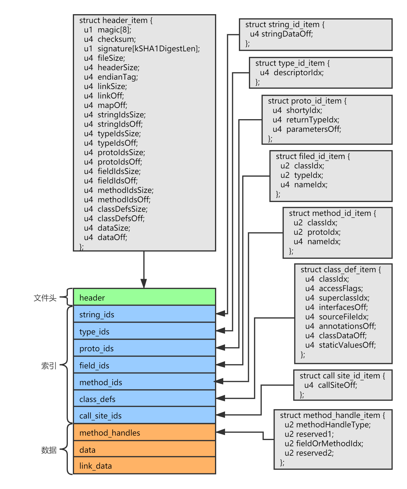

前言 Java 代码文件在经过 javac 编译器编译后会产出 .class 格式的 Java 虚拟机可执行的字节码文件，而 Dex 文件则是 Android SDK 编译 Java 代码后的产物（Android SDK 使用 dx 或 d8 编译器将 .class 文件编译为 .dex 文件），了解 Dex 文件结构是理解 Android 虚拟机原理的基础，同时也是学习 Android 逆向工程的基础。
Dex 文件的文件后缀为 .dex，是 Android 虚拟机的可执行文件。
基本数据类型 首先说明组成 Dex 文件结构中的基本类型，包含原生类型和 uleb128 类型：
名称
说明
byte
8 位有符号整数
ubyte
8 位无符号整数
short
16 位有符号整数，小端字节序
ushort
16 位无符号整数，小端字节序
int
32 位有符号整数，小端字节序
uint
32 位无符号整数，小端字节序
long
64 位有符号整数，小端字节序
ulong
64 位无符号整数，小端字节序
sleb128
有符号 LEB128，可变长度
uleb128
无符号 LEB128，可变长度
uleb128p1
无符号 LEB128 + 1，可变长度
在系统源码 DexFile.h 的对应类型别名定义如下：
1 2 3 4 5 6 7 8 9 10 // DexFile.h typedef uint8_t u1; typedef uint16_t u2; typedef uint32_t u4; typedef uint64_t u8; typedef int8_t s1; typedef int16_t s2; typedef int32_t s4; typedef int64_t s8;
LEB128 类型 LEB128 类型是 Dex 文件中的基础类型之一，该类型格式借鉴了 DWARF3 规范。在 Dex 文件中，LEB128 仅用于对 32 位数字进行编码。
LEB128 全称为“Little-Endian Base 128“，表示任意有符号或无符号整数的可变长度编码。
每个 LEB128 编码值由 1-5 个字节组成，共同表示一个 32 位的值，设计 LEB128 的目的是为了节省内存。
表示方法是：每个字节的首位为标志位，为 0 说明这个字节是 LEB128 类型的最后一个字节，为 1 则表示后面还有若干字节，然后将每个字节去除标志位后的 7 位组合成一个 32 数字。
uleb128 对于无符号的 uleb128 类型，使用两个字节表示十进制数字 4176 的示例如下：
1 1 1 0 1 0 0 0 0 0 0 1 0 0 0 0 0
去除标志位后：
1 2 3 1 0 1 0 0 0 0 0 1 0 0 0 0 0 ^ ^ 去除 去除
组合后使用便于阅读的大端格式表示为：
1 2 3 0 0 0 1 0 0 0 0 0 1 0 1 0 0 0 0 ^ ^ 补充 0
1000001010000 转化为十进制的值为 4176。
leb128 对于有符号的 leb128 类型，最后一个字节的除了标志位的最高位将为符号位，将进行符号扩展。
例如下面使用两个字节的 leb128 表示有符号数：
1 2 3 1 1 0 1 0 0 0 0 0 1 1 0 0 0 0 0 ^ 将进行符号扩展
去除标志位后：
1 2 3 1 0 1 0 0 0 0 1 1 0 0 0 0 0 ^ ^ 去除 去除
组合后使用便于阅读的大端格式表示为：
1 2 3 0 0 1 1 0 0 0 0 0 1 0 1 0 0 0 0 ^ ^ 补充 0
由于符号位为 1，说明表示负数，则使用补码计算：
1 2 3 4 5 6 7 首先求反码： 0 0 0 0 1 1 1 1 1 0 1 0 1 1 1 1 然后 +1 -> 0 0 0 0 1 1 1 1 1 0 1 1 0 0 0 0
111110110000 的十进制结果为 4016，添加负号为 -4016。
uleb128p1 uleb128p1 用于表示一个有符号值，它的编码方法为 uleb128 的值加 1，那么解码时首先以 uleb128 格式解析值，然后减去 1，主要是为了表示 -1 这个常用数而节省空间，原本使用 sleb128 需要 2 个字节才能表示 -1（11111111 01111111），现在一个字节就可以表示了（00000000）。
LEB128 类型的一些典型值：
Binary
Hex
sleb128
uleb128
uleb128p1
00000000 00000000
00
0
0
-1
00000000 00000001
01
1
1
0
00000000 01111111
7f
-1
127
126
10000000 01111111
80 7f
-128
16256
16255
Dex 文件结构图 Dex 文件的总体结构图：

Dex 结构说明 下面对于 Dex 的详细结构进行说明（下面的参考了 Android 9.0.0_r3 系统源码中的 dalvik/libdex/DexFile.h 头文件）。
hedaer_item 首先 Dex 文件的头部具有一个 hedaer_item 结构，它存放了整个 Dex 文件的元信息，描述了一个 Dex 文件的概要结构。
下面是它的结构定义：
1 2 3 4 5 6 7 8 9 10 11 12 13 14 15 16 17 18 19 20 21 22 23 24 25 26 27 28 29 30 31 32 33 34 35 36 37 38 39 40 41 42 43 44 45 46 47 48 49 50 51 52 53 54 55 56 57 58 59 60 61 62 63 64 65 66 67 68 69 70 71 72 73 74 75 76 77 78 struct hedaer_item { u1 magic[8 ]; u4 checksum; u1 signature[20 ]; u4 file_size; u4 header_size; u4 endian_tag; u4 link_size; u4 link_off; u4 map_off; u4 string_ids_size; u4 string_ids_off; u4 type_ids_size; u4 type_ids_off; u4 proto_ids_size; u4 proto_ids_off; u4 field_ids_size; u4 field_ids_off; u4 method_ids_size; u4 method_ids_off; u4 class_defs_size; u4 class_defs_off; u4 data_size; u4 data_off; };
和所有文件格式标准一样（使用魔数标识文件类型），Dex 文件的前 8 个字节 magic 字段是魔数，表示 Dex 这种文件类型，它的值是 dex 字符串和文件格式版本号的组合，例如 dex\n039\0，其中版本号用于为系统识别解析不同版本格式的 Dex 文件提供支持，不同版本的 Dex 文件可能具有结构差异，新版本可能支持更多指令。039 版本的格式在 Android 9.0 中被增加。
从前面的结构图中可以知道，Dex 文件大致分为 3 块区域，文件头、索引区域以及数据区域。其中索引区域用于描述 Dex 几个关键子结构的分布，包含指向子结构的地址偏移的列表，数据区用于存放具体的信息，是索引区域所指向的目标区域，包含每个类的详细信息以及类成员和类方法的信息，以及每个方法的完整字节码指令等。
如果要对一个 Dex 文件进行解析，那么可以按照从上至下的方式，由文件概要信息自然的解析到具体数据结构。
索引区内容，包含 string_ids、type_ids、proto_ids、field_ids、method_ids、class_defs、call_site_ids 一共 7 个 Dex 核心结构，上面 header_item 结构的已经包含了每个结构的相关信息，每个结构都是一个数组，在 header_item 的描述中都具有一个 size 属性表示数组成员数量，和一个 off 表示在文件中的偏移值。
下面介绍索引区结构的详细结构。
string_ids string_ids 是字符串池，保存 Dex 文件中所用到的所有字符串，其他结构中如果包含字符串类型的变量，将会提供对应字符串在字符串池中的索引。
string_ids 是数组结构，每个数组成员为一个 string_id_item，它存放了每个字符串在 data 结构中的偏移地址。
1 2 3 4 5 6 7 struct string_id_item { u4 string_data_off; };
string_id_item 的偏移指向一个表示字符串的结构，为 string_data_item，它包含字符串的长度和具体内容，长度使用 uleb128 类型存储：
1 2 3 4 5 6 7 8 9 10 11 12 struct string_data_item { uleb128 utf16_size; u1* data; }
type_ids type_ids 是类型标识符信息，包含了代码中使用到的所有 Java 类型以及原始类型。
type_ids 是数组结构，每个数组成员为一个 type_id_item 结构，它存放了类型所对应名字的字符串的在字符串池中的索引。
1 2 3 4 5 6 7 8 struct type_id_item { u4 descriptor_idx; };
proto_ids proto_ids 是方法原型标识符信息，存放方法返回值和参数的类型标识符信息。
proto_ids 是数组结构，每个数组成员为一个 proto_id_item，它存放了方法返回类型标识符字符串在字符串池中的索引，以及参数、返回类型在 type_ids 中的索引。
1 2 3 4 5 6 7 8 9 10 11 12 13 14 15 16 struct proto_id_item { u4 shorty_ids; u4 return_type_idx; u4 parameters_off; };
field_ids field_ids 是类成员变量标识符信息，存放所有类成员类型标识符信息。
field_ids 是数组结构，每个数组成员为一个 field_id_item，它存放了成员变量所属类型的信息，和成员变量本身的类型信息：
1 2 3 4 5 6 7 8 9 10 11 12 13 14 15 struct field_id_item { u2 class_idx; u2 type_idx; u4 name_idx; };
method_ids method_ids 是类方法标识符信息，存放所有类方法的类型标识符信息。
method_ids 是数组结构，每个数组成员为一个 method_id_item，它存放了方法所属类型的信息，和方法本身的类型信息：
1 2 3 4 5 6 7 8 9 10 11 12 13 14 15 struct method_id_item { u2 class_idx; u2 proto_idx; u4 name_idx; };
class_defs class_defs 是类定义信息，存放了所有类的定义信息。
class_defs 是数组结构，每个数组成员为一个 class_def_item，包含这个类定义所需要的全部信息。
1 2 3 4 5 6 7 8 9 10 11 12 13 14 15 16 17 18 19 20 21 22 23 24 25 26 27 28 29 30 31 32 33 34 35 36 37 38 39 40 41 42 43 44 45 46 47 48 49 50 51 52 struct class_def_item { u4 class_idx; u4 access_flag; u4 superclass_idx; u4 interfaces_off; u4 source_file_idx; u4 annotations_off; u4 class_data_off; u4 static_values_off; };
其中 access_flags 为访问标识符，可选值如下：
1 2 3 4 5 6 7 8 9 10 11 12 13 14 15 16 17 18 19 20 21 22 23 24 25 26 27 28 29 30 31 32 33 34 35 enum { ACC_PUBLIC = 0x00000001 , ACC_PRIVATE = 0x00000002 , ACC_PROTECTED = 0x00000004 , ACC_STATIC = 0x00000008 , ACC_FINAL = 0x00000010 , ACC_SYNCHRONIZED= 0x00000020 , ACC_SUPER = 0x00000020 , ACC_VOLATILE = 0x00000040 , ACC_BRIDGE = 0x00000040 , ACC_TRANSIENT = 0x00000080 , ACC_VARARGS = 0x00000080 , ACC_NATIVE = 0x00000100 , ACC_INTERFACE = 0x00000200 , ACC_ABSTRACT = 0x00000400 , ACC_STRICT = 0x00000800 , ACC_SYNTHETIC = 0x00001000 , ACC_ANNOTATION = 0x00002000 , ACC_ENUM = 0x00004000 , ACC_CONSTRUCTOR = 0x00010000 , ACC_DECLARED_SYNCHRONIZED = 0x00020000 , ACC_CLASS_MASK = (ACC_PUBLIC | ACC_FINAL | ACC_INTERFACE | ACC_ABSTRACT | ACC_SYNTHETIC | ACC_ANNOTATION | ACC_ENUM), ACC_INNER_CLASS_MASK = (ACC_CLASS_MASK | ACC_PRIVATE | ACC_PROTECTED | ACC_STATIC), ACC_FIELD_MASK = (ACC_PUBLIC | ACC_PRIVATE | ACC_PROTECTED | ACC_STATIC | ACC_FINAL | ACC_VOLATILE | ACC_TRANSIENT | ACC_SYNTHETIC | ACC_ENUM), ACC_METHOD_MASK = (ACC_PUBLIC | ACC_PRIVATE | ACC_PROTECTED | ACC_STATIC | ACC_FINAL | ACC_SYNCHRONIZED | ACC_BRIDGE | ACC_VARARGS | ACC_NATIVE | ACC_ABSTRACT | ACC_STRICT | ACC_SYNTHETIC | ACC_CONSTRUCTOR | ACC_DECLARED_SYNCHRONIZED), };
call_site_ids call_site_ids 存放的是调用站点标识符信息，它是和 Java 中的提供的 MethodHandler 相关的信息。
call_site_ids 是数组结构，每个数组成员为一个 call_site_id_item。
1 2 3 4 5 6 7 8 struct call_site_id_item { u4 call_site_off; };
call_site_item 是一个 encoded_array_item 结构，具体内容，可参考官方介绍，这里不对它进行重点关注。
到这里就介绍完了索引区的基本内容。
然后现在回到 header_item 中，看第 9 个 map_off 字段，它指向一个 map_list 结构，map_list 存放了 Dex 文件所有的结构描述，同时也包含 header_item 区域和索引区结构，下面看一下它的具体内容。
map_list map_list 结构定义如下：
1 2 3 4 5 struct map_list { u4 size; map_item* list; };
有大小和数组成员，在解析时首先读取数组元素的大小，再根据大小解析指定数量的 map_item 数组成员结构。
map_item 结构定义如下：
1 2 3 4 5 6 7 struct map_item { u2 type; u2 unused; u4 size; u4 offset; };
根据 type 的值来可确认其说明的对应结构：
1 2 3 4 5 6 7 8 9 10 11 12 13 14 15 16 17 18 19 20 21 22 23 enum { TYPE_HEADER_ITEM = 0x0000 , TYPE_STRING_ID_ITEM = 0x0001 , TYPE_TYPE_ID_ITEM = 0x0002 , TYPE_PROTO_ID_ITEM = 0x0003 , TYPE_FIELD_ID_ITEM = 0x0004 , TYPE_METHOD_ID_ITEM = 0x0005 , TYPE_CLASS_DEF_ITEM = 0x0006 , TYPE_CALL_SITE_ID_ITEM = 0x0007 , TYPE_METHOD_HANDLE_ITEM = 0x0008 , TYPE_MAP_LIST = 0x1000 , TYPE_TYPE_LIST = 0x1001 , TYPE_ANNOTATION_SET_REF_LIST = 0x1002 , TYPE_ANNOTATION_SET_ITEM = 0x1003 , TYPE_CLASS_DATA_ITEM = 0x2000 , TYPE_CODE_ITEM = 0x2001 , TYPE_STRING_DATA_ITEM = 0x2002 , TYPE_DEBUG_INFO_ITEM = 0x2003 , TYPE_ANNOTATION_ITEM = 0x2004 , TYPE_ENCODED_ARRAY_ITEM = 0x2005 , TYPE_ANNOTATIONS_DIRECTORY_ITEM = 0x2006 , };
通过遍历 map_list 即可得到每个结构的偏移地址和结构中项的数量，从而对整个 Dex 文件进行解析。
下面看一下除了索引区结构的其他结构。
type_list type_list 是类型列表，结构如下：
1 2 3 4 5 struct type_list { u4 size; type_item *list; };
每个列表成员为 type_item，包含 type_ids 数组的索引：
1 2 3 4 struct type_item { u2 type_idx; };
class_data_item class_data_item 表示类的信息，包含类成员和类方法的信息。
1 2 3 4 5 6 7 8 9 10 11 12 13 14 15 16 17 18 19 20 21 22 23 24 25 26 struct class_data_item { uleb128 static_fields_size; uleb128 instance_fields_size; uleb128 direct_methods_size; uleb128 virtual_methods_size; encoded_field* static_fields; encoded_field* instance_fields; encoded_method* direct_methods; encoded_method* virtual_methods; };
描述类成员和类方法的子结构：
1 2 3 4 5 6 7 8 9 10 11 12 struct encoded_field { uleb128 field_idx_diff; uleb128 access_flags; };
1 2 3 4 5 6 7 8 9 10 11 12 13 14 15 16 17 struct encoded_method { uleb128 method_idx_diff; uleb128 access_flags; uleb128 code_off; };
code_item code_item 是字节码信息，包含每个 Java 代码块的代码，和寄存器数量等相关信息。
1 2 3 4 5 6 7 8 9 10 11 12 13 14 15 16 17 18 19 20 21 22 23 24 25 26 27 28 29 30 31 32 33 34 35 36 37 38 39 40 struct code_item { u2 registers_size; u2 ins_size; u2 outs_size; u2 tries_size; u4 debug_info_off; u4 insns_size; u2* insns; u2 padding; try_item* tries; encoded_catch_handler_list handlers; };
string_data_item 前面已经说过了，表示 Dex 文件中用到的每一个字符串。
debug_info_item debug_info_item 存放代码调试信息。
1 2 3 4 5 6 7 8 9 10 11 12 13 14 15 16 17 struct debug_info_item { uleb128 line_start; uleb128 parameters_size; uleb128p1 parameter_names; };
其他几个 annotation_set_ref_list、annotation_set_item、annotation_item、annotations_directory_item 是存放代码注释相关信息的结构，这里不再列出了。
到这里整个 Dex 文件的结构也就介绍的差不多了，但是只看这些文字说明，并不能真正了解一个 Dex 文件中的内容，下面通过解析一个真实的 Dex 文件，来了解 Dex 文件的具体内容。
Dex 文件解析 为了解析 Dex 文件，首先需要有一个 Dex 文件，下面来手动构建一个 Dex 文件。
构建 Dex 文件 Dex 文件由 dx 或 d8 编译器编译 .class 文件生成，这里首先编写一个简单的 Java 类，包含成员变量和方法：
1 2 3 4 5 6 7 8 9 10 11 12 13 14 15 package io.l0neman.example; public class Hello private static int sField = 1 ; private String mField = "field" ; private void test () System.out.println(mField); } public static void main (String[] args) System.out.println("Hello Dex." ); } }
编译为 Hello.class 文件：
1 javac io/l0neman/example/Hello.java
然后使用 dx 命令将 Hello.class 编译为 Hello.dex 文件：
1 dx --dex --output=Hello.dex io/l0neman/example/Hello.class
或使用 d8 命令将 Hello.class 编译为 Hello.jar 文件，Hello.jar 是一个压缩包，里面包含一个 classes.dex 文件：
1 d8 --output Hello-d8.jar io/l0neman/example/Hello.class
使用 dx 或者 d8 编译出来的 dex 文件的执行结果是一样的（打印出 Hello Dex.）。
执行 Dex 文件 Dex 文件是 Android 虚拟机的可执行文件，所以在 Android 设备上可以直接执行 Dex 文件。
首先将 Dex 文件推送到 Android 设备：
1 adb push Hello.dex /sdcard/
然后使用如下两种方式之一进行执行：
使用 dalvikvm 命令
1 dalvikvm -cp Hello.dex io.l0neman.example.Hello
使用 app_process 命令
1 app_process -Djava.class.path=Hello.dex /data/local/temp io.l0neman.example.Hello
解析 Dex 文件 下面开始解析 Dex 文件。
对于解析一个文件结构来说，使用 C/C++ 语言要比 Java 语言更容易实现，因为 C/C++ 语言的 read 函数可直接传入一个结构体指针，文件中对应的字节将会被字节映射到结构体中，而 Java 只能逐个字节的解析，除非进行封装。
如果想要类似于 C/C++ 方法的 read 函数体验，可以用我之前封装的一个工具类：ObjectInput ，可以直接自动将文件指定字节，解析到类的每个类型的成员上。
这里采用 C++ 语言对 Dex 文件进行解析。
首先将上面每个结构体放在新建的 DexFile.h 中，为了解析时可以直接用到它们（相关结构体可直接从 Android 系统源码中提取，路径是 dalvik/libdex/DexFile.h）。
解析核心方法主要是利用 fread 和 fseek 函数读取文件和控制文件读取偏移，遇到具体结构再根据具体内容进行解析，例如遇到 uleb128 作为数组大小，那就先解析这个 uleb128 的值，再根据它的值再解析每个数组成员。
开始解析 下面开始解析 Dex 文件，首先需要读取 Hello.dex 文件，这里使用面向对象的方式，首先定义一个解析类 DexFileParser，通过它的构造函数传入 Dex 文件路径。
1 2 3 4 5 6 7 8 9 10 11 12 13 14 15 16 17 18 19 20 21 22 23 24 25 26 27 28 29 30 31 32 33 34 35 36 37 38 39 40 41 42 43 44 45 46 47 48 49 50 51 52 53 #ifndef DEX_PARSER_H #define DEX_PARSER_H #include <iostream> #include "type/DexFile.h" class DexParser { public : DexParser (char const * dex_file_path); ~DexParser (); void parse () private : void parse_header_item () void parse_map_list () void parse_string_list (const u4 size, const u4 offset) void parse_type_ids (const u4 size, const u4 offset) void parse_proto_ids (const u4 size, const u4 offset) void parse_field_ids (const u4 size, const u4 offset) const void parse_method_ids (const u4 size, const u4 offset) const void parse_class_defs (const u4 size, const u4 offset) const void parse_encoded_field (const u4 offset, encoded_field* p) const void parse_encoded_method (const u4 offset, encoded_method* p) const void parse_class_data_list (const u4 size, const u4 offset) const void parse_code_list (const u4 size, const u4 offset) const void call_site_ids () void method_handles () const char * get_string_from_string_list (const u4 index) const const char * get_type_description (const u4 index) const proto_id_item get_proto_item (const u4 index) const ; FILE* dex_file_; header_item dex_header_; map_list map_list_; string_id_item* string_ids_; u4 string_list_size_; string_data_item* string_list_; type_id_item* type_list_; proto_id_item* proto_list_; }; #endif
main 函数调用代码如下：
1 2 3 4 5 6 7 8 9 10 11 12 #include <iostream> #include "DexParser.h" int main () DexParser dex_parser (R"(.\Hello.dex)" ) ; dex_parser.parse (); return 0 ; }
打开 Dex 文件 下面看构造函数如何打开文件：
1 2 3 4 5 6 7 8 9 10 11 12 13 14 15 16 17 18 19 20 21 22 DexParser::DexParser (char const * dex_file_path) { this ->dex_file_ = nullptr ; this ->dex_header_ = header_item (); this ->map_list_ = map_list (); this ->string_ids_ = nullptr ; this ->string_list_size_ = 0 ; this ->string_list_ = nullptr ; this ->type_list_ = nullptr ; this ->proto_list_ = nullptr ; printf ("dex file: %s\n\n" , dex_file_path); const auto s = fopen_s (&this ->dex_file_, dex_file_path, "rb" ); if (s != 0 || this ->dex_file_ == nullptr ) { printf ("open dex file error: %s\n" , dex_file_path); } }
读取后就可以开始使用 fread 函数解析结构体了。
首先解析 Dex 文件头，header_item 结构：
1 2 3 4 5 6 7 8 9 10 11 12 13 14 15 16 17 18 19 20 21 22 23 24 25 26 27 28 29 30 31 32 33 34 35 36 37 38 39 40 41 42 43 44 45 46 47 48 49 50 51 void DexParser::parse () printf (">>>>>>>>>>>> parse header_item <<<<<<<<<<<<\n\n" ); parse_header_item (); } void DexParser::parse_header_item () if (0 == fread (&this ->dex_header_, sizeof 1 , this ->dex_file_)) { printf ("parse dex header error.\n" ); } print_dex_header (&this ->dex_header_); } inline void print_dex_header (header_item* dex_header) printf ("magic: " ); Printer::print_hex_array (dex_header->magic, 8 ); printf ("checksum: %6x\n" , dex_header->checksum); printf ("signature: " ); Printer::print_hex_array (dex_header->signature, 20 ); printf ("file_size: %d\n" , dex_header->file_size); printf ("header_size: %d\n" , dex_header->header_size); printf ("endian_tag: %d\n" , dex_header->endian_tag); printf ("link_size: %d\n" , dex_header->link_size); printf ("link_off: %d\n" , dex_header->link_off); printf ("map_off: %d\n" , dex_header->map_off); printf ("string_ids_size: %d\n" , dex_header->string_ids_size); printf ("string_ids_off: %d\n" , dex_header->string_ids_off); printf ("type_ids_size: %d\n" , dex_header->type_ids_size); printf ("type_ids_off: %d\n" , dex_header->type_ids_off); printf ("proto_ids_size: %d\n" , dex_header->proto_ids_size); printf ("proto_ids_off: %d\n" , dex_header->proto_ids_off); printf ("field_ids_size: %d\n" , dex_header->field_ids_size); printf ("field_ids_off: %d\n" , dex_header->field_ids_off); printf ("method_ids_size: %d\n" , dex_header->method_ids_size); printf ("method_ids_off: %d\n" , dex_header->method_ids_off); printf ("class_defs_size: %d\n" , dex_header->class_defs_size); printf ("class_defs_off: %d\n" , dex_header->class_defs_off); printf ("data_size: %d\n" , dex_header->data_size); printf ("data_off: %d\n" , dex_header->data_off); }
可以看到，解析非常简单，一行代码就搞定了。
上面的 print_hex_array 函数是把整型数组作为 16 进制打印出来，更适合阅读：
1 2 3 4 5 6 7 8 9 void Printer::print_hex_array (uint8_t const * array, const unsigned int size) for (unsigned int i = 0 ; i < size; i++) { printf ("%.2x " , array[i]); } printf ("\n" ); }
对于 Hello.dex 的 header_item 解析结果如下：
1 2 3 4 5 6 7 8 9 10 11 12 13 14 15 16 17 18 19 20 21 22 23 24 25 >>>>>>>>>>>> parse header_item <<<<<<<<<<<< magic: 64 65 78 0a 30 33 35 00 checksum: 99137d68 signature: 68 bf 36 a6 0d f7 51 a8 7e 79 c8 09 2f 15 ac fa 7b da 6a 42 file_size: 944 header_size: 112 endian_tag: 305419896 link_size: 0 link_off: 0 map_off: 784 string_ids_size: 20 string_ids_off: 112 type_ids_size: 8 type_ids_off: 192 proto_ids_size: 3 proto_ids_off: 224 field_ids_size: 3 field_ids_off: 260 method_ids_size: 6 method_ids_off: 284 class_defs_size: 1 class_defs_off: 332 data_size: 580 data_off: 364
其中 magic 的值如下（. 表示空格）：
1 64 65 78 0A 30 33 35 00 -> dex.035.
符合前面所说的 Dex 文件的魔数，里面包含 dex 字符串，以及版本号 035；
其中的 file_size 为 Dex 文件的大小，在电脑上看这个 Dex 文件的大小属性，将和 file_size 一致。
其他的字段为文件校验值和各个结构的偏移。
下面解析其他结构，这里不用根据 header_item 里面提供的索引区标识来解析，由于 map_list 结构就包含了整个 Dex 文件的所有结构的信息，那么直接解析它就可以了解 Dex 文件其他结构的信息了，从而解析每个结构。
map_list 1 2 3 4 5 6 7 8 9 10 11 12 void DexParser::parse () printf (">>>>>>>>>>>> parse header_item <<<<<<<<<<<<\n\n" ); parse_header_item (); printf (">>>>>>>>>>>> parse map_list <<<<<<<<<<<<\n\n" ); parse_map_list (); }
1 2 3 4 5 6 7 8 9 10 11 12 13 14 15 16 17 18 19 20 21 22 23 24 25 26 27 28 29 30 31 32 33 34 35 36 37 38 39 40 41 42 43 44 45 46 47 48 49 50 51 52 53 54 55 56 57 58 59 60 void DexParser::parse_map_list () const auto offset = this ->dex_header_.map_off; if (0 != fseek (dex_file_, offset, 0 )) { printf ("#parse_map_list - seek file error.\n" ); return ; } u4 t_size = 0 ; if (0 == fread (&t_size, sizeof int ), 1 , dex_file_)) { printf ("#parse_map_list - read file error.\n" ); return ; } if (t_size == 0 ) { printf ("#parse_map_list - map_list.size error.\n" ); return ; } this ->map_list_ = map_list (t_size); printf ("map_list size: %u\n" , this ->map_list_.size); if (0 != _fseeki64(dex_file_, offset + sizeof 0 )) { printf ("#parse_map_list - seek file error.\n" ); return ; } this ->map_list_.list = new map_item[this ->map_list_.size]; const size_t size = this ->map_list_.size; if (0 == fread (this ->map_list_.list, sizeof { printf ("#parse_map_list - read map_list.list error.\n" ); return ; } for (u4 i = 0 ; i < this ->map_list_.size; i++) print_map_item (&this ->map_list_.list[i]); } inline void print_map_item (map_item const * map_item) printf ("\nmap_item:\n" ); printf ("type: 0x%x\n" , map_item->type); printf ("type desc: %s\n" , type_string (map_item->type)); printf ("size: %d\n" , map_item->size); printf ("offset: %u\n" , map_item->offset); }
上面解析了 map_list 结构，包含一个 map_item 数组，每个 map_item 描述 Dex 文件的每个结构。
解析结果如下：
1 2 3 4 5 6 7 8 9 10 11 12 13 14 15 16 17 18 19 20 21 22 23 24 25 26 27 28 29 30 31 32 33 34 35 36 37 38 39 40 41 42 43 44 45 46 47 48 49 50 51 52 53 54 55 56 57 58 59 60 61 62 63 64 65 66 67 68 69 70 71 72 73 74 75 76 77 78 79 80 81 >>>>>>>>>>>> parse map_list <<<<<<<<<<<< map_list size: 13 map_item: type: 0x0 type desc: header_item size: 1 offset: 0 map_item: type: 0x1 type desc: string_id_item size: 20 offset: 112 map_item: type: 0x2 type desc: type_id_item size: 8 offset: 192 map_item: type: 0x3 type desc: proto_id_item size: 3 offset: 224 map_item: type: 0x4 type desc: field_id_item size: 3 offset: 260 map_item: type: 0x5 type desc: method_id_item size: 6 offset: 284 map_item: type: 0x6 type desc: class_def_item size: 1 offset: 332 map_item: type: 0x2001 type desc: code_item size: 4 offset: 364 map_item: type: 0x1001 type desc: type_list size: 2 offset: 484 map_item: type: 0x2002 type desc: string_data_item size: 20 offset: 498 map_item: type: 0x2003 type desc: debug_info_item size: 4 offset: 731 map_item: type: 0x2000 type desc: class_data_item size: 1 offset: 755 map_item: type: 0x1000 type desc: map_list size: 1 offset: 784
下面就可以遍历 map_list 了，然后根据提供的偏移和大小解析对应结构就好了。
代码如下：
1 2 3 4 5 6 7 8 9 10 11 12 13 14 15 16 17 18 19 20 21 22 23 24 25 26 27 28 29 30 31 32 33 34 35 36 37 38 39 40 41 42 43 44 45 46 47 48 49 50 51 52 53 54 55 56 57 58 59 60 61 62 63 64 65 66 67 68 69 70 71 72 73 74 75 void DexParser::parse () printf (">>>>>>>>>>>> parse header_item <<<<<<<<<<<<\n\n" ); parse_header_item (); printf (">>>>>>>>>>>> parse map_list <<<<<<<<<<<<\n\n" ); parse_map_list (); for (u4 i = 0 ; i < this ->map_list_.size; i++) { const map_item item = map_list_.list[i]; printf ("\n>>>>>>>>>>>> parse %s:\n\n" , type_string (item.type)); if (item.size == 0 ) { printf ("item is empty.\n" ); continue ; } switch { case TYPE_STRING_ID_ITEM: parse_string_list (item.size, item.offset); break ; case TYPE_TYPE_ID_ITEM: parse_type_ids (item.size, item.offset); break ; case TYPE_PROTO_ID_ITEM: parse_proto_ids (item.size, item.offset); break ; case TYPE_FIELD_ID_ITEM: parse_field_ids (item.size, item.offset); break ; case TYPE_METHOD_ID_ITEM: parse_method_ids (item.size, item.offset); break ; case TYPE_CLASS_DEF_ITEM: parse_class_defs (item.size, item.offset); break ; case TYPE_MAP_LIST: printf ("ignore.\n" ); break ; case TYPE_TYPE_LIST: printf ("ignore.\n" ); break ; case TYPE_ANNOTATION_SET_ITEM: printf ("ignore.\n" ); break ; case TYPE_CLASS_DATA_ITEM: parse_class_data_list (item.size, item.offset); break ; case TYPE_CODE_ITEM: parse_code_list (item.size, item.offset); break ; case TYPE_STRING_DATA_ITEM: printf ("ignore.\n" ); break ; case TYPE_DEBUG_INFO_ITEM: printf ("ignore.\n" ); break ; case TYPE_ANNOTATION_ITEM: printf ("ignore.\n" ); break ; case TYPE_ENCODED_ARRAY_ITEM: printf ("ignore.\n" ); break ; case TYPE_ANNOTATIONS_DIRECTORY_ITEM: printf ("ignore.\n" ); break ; default : printf ("item: %s\n" , type_string (item.type)); } } }
下面是 Dex 关键结构（跳过了一些注释和调试结构的解析）的解析代码以及解析 Hello.dex 的结果。
string_list 1 2 3 4 5 6 7 8 9 10 11 12 13 14 15 16 17 18 19 20 21 22 23 24 25 26 27 28 29 30 31 32 33 34 35 36 37 38 39 40 41 42 43 44 45 void DexParser::parse_string_list (const u4 size, const u4 offset) printf ("string ids count: %u\n" , size); printf ("string ids offset: %u\n" , offset); if (size == 0 ) { printf ("#parse_string_list - not found string ids.\n" ); return ; } { if (0 != fseek (this ->dex_file_, offset, 0 )) { printf ("#parse_string_list - seek file error." ); return ; } this ->string_ids_ = new string_id_item[size]; if (0 == fread (this ->string_ids_, sizeof this ->dex_file_)) { printf ("#parse_string_list - read file error." ); return ; } } this ->string_list_size_ = size; this ->string_list_ = new string_data_item[size]; for (u4 i = 0 ; i < size; i++) { const auto str_off = this ->string_ids_[i].string_data_off; printf ("\nstring offset: %d\n" , str_off); string_data_item& item = this ->string_list_[i]; item.parse (this ->dex_file_, str_off); printf ("string: %s\n" , this ->string_list_[i].data); } }
解析结果如下，包含 Dex 文件中所有使用到的字符串：
1 2 3 4 5 6 7 8 9 10 11 12 13 14 15 16 17 18 19 20 21 22 23 24 25 26 27 28 29 30 31 32 33 34 35 36 37 38 39 40 41 42 43 44 45 46 47 48 49 50 51 52 53 54 55 56 57 58 59 60 61 62 63 64 >>>>>>>>>>>> parse string_id_item: string ids count: 20 string ids offset: 112 string offset: 498 string: <clinit> string offset: 508 string: <init> string offset: 516 string: Hello Dex. string offset: 528 string: Hello.java string offset: 540 string: I string offset: 543 string: Lio/l0neman/example/Hello; string offset: 571 string: Ljava/io/PrintStream; string offset: 594 string: Ljava/lang/Object; string offset: 614 string: Ljava/lang/String; string offset: 634 string: Ljava/lang/System; string offset: 654 string: V string offset: 657 string: VL string offset: 661 string: [Ljava/lang/String; string offset: 682 string: field string offset: 689 string: mField string offset: 697 string: main string offset: 703 string: out string offset: 708 string: println string offset: 717 string: sField string offset: 725 string: test
type_ids 1 2 3 4 5 6 7 8 9 10 11 12 13 14 15 16 17 18 19 20 21 22 23 24 25 26 27 28 29 30 31 32 33 void DexParser::parse_type_ids (const u4 size, const u4 offset) const auto type_ids_size = size; if (type_ids_size == 0 ) { printf ("#parse_type_ids - not found type ids.\n" ); return ; } printf ("type_ids size: %u\n" , type_ids_size); printf ("type_ids offset: %u\n" , offset); if (0 != fseek (this ->dex_file_, offset, 0 )) { printf ("#parse_type_ids - seek file error.\n" ); return ; } this ->type_list_ = new type_id_item[type_ids_size]; if (0 == fread (this ->type_list_, sizeof type_ids_size, this ->dex_file_)) { printf ("#parse_type_ids - read file error.\n" ); return ; } for (u4 i = 0 ; i < type_ids_size; i++) { printf ("type: %s\n" , get_string_from_string_list ( this ->type_list_[i].descriptor_idx)); } }
解析结果如下，所有类型标识符：
1 2 3 4 5 6 7 8 9 10 11 12 >>>>>>>>>>>> parse type_id_item: type_ids size: 8 type_ids offset: 192 type: I type: Lio/l0neman/example/Hello; type: Ljava/io/PrintStream; type: Ljava/lang/Object; type: Ljava/lang/String; type: Ljava/lang/System; type: V type: [Ljava/lang/String;
proto_ids 1 2 3 4 5 6 7 8 9 10 11 12 13 14 15 16 17 18 19 20 21 22 23 24 25 26 27 28 void DexParser::parse_proto_ids (const u4 size, const u4 offset) printf ("proto ids size: %d\n" , size); printf ("proto ids offset: %d\n\n" , offset); if (0 != fseek (this ->dex_file_, offset, 0 )) { printf ("#parse_proto_ids - seek file error.\n" ); return ; } this ->proto_list_ = new proto_id_item[size]; if (0 == fread (this ->proto_list_, sizeof this ->dex_file_)) { printf ("#parse_proto_ids - read file error." ); return ; } for (u4 i = 0 ; i < size; i++) { printf ("shorty: %s\n" , get_string_from_string_list ( this ->proto_list_[i].shorty_ids)); printf ("return type: %s\n" , get_type_description ( this ->proto_list_[i].return_type_idx)); printf ("parameters offset: %d\n\n" , this ->proto_list_[i].parameters_off); } }
解析结果如下，方法类型标识符：
1 2 3 4 5 6 7 8 9 10 11 12 13 14 15 16 >>>>>>>>>>>> parse proto_id_item: proto ids size: 3 proto ids offset: 224 shorty: V return type: V parameters offset: 0 shorty: VL return type: V parameters offset: 484 shorty: VL return type: V parameters offset: 492
field_ids 1 2 3 4 5 6 7 8 9 10 11 12 13 14 15 16 17 18 19 20 21 22 23 24 25 26 27 28 29 void DexParser::parse_field_ids (const u4 size, const u4 offset) const printf ("field list size: %d\n" , size); printf ("field list offset: %d\n\n" , offset); if (0 != fseek (this ->dex_file_, offset, 0 )) { printf ("#parse_field_ids - seek file error.\n" ); return ; } auto field_list = new field_id_item[size]; if (0 == fread (field_list, sizeof this ->dex_file_)) { printf ("#parse_field_ids - read file error.\n" ); return ; } for (u4 i = 0 ; i < size; i++) { printf ("field name: %s\n" , get_string_from_string_list (field_list[i].name_idx)); printf ("parent class name: %s\n" , get_type_description (field_list[i].class_idx)); printf ("type name: %s\n\n" , get_type_description (field_list[i].type_idx)); } delete [] field_list; field_list = nullptr ; }
解析结果如下，所有类成员：
1 2 3 4 5 6 7 8 9 10 11 12 13 14 15 16 >>>>>>>>>>>> parse field_id_item: field list size: 3 field list offset: 260 field name: mField parent class name: Lio/l0neman/example/Hello; type name: Ljava/lang/String; field name: sField parent class name: Lio/l0neman/example/Hello; type name: I field name: out parent class name: Ljava/lang/System; type name: Ljava/io/PrintStream;
method_ids 1 2 3 4 5 6 7 8 9 10 11 12 13 14 15 16 17 18 19 20 21 22 23 24 25 26 27 28 29 30 31 void DexParser::parse_method_ids (const u4 size, const u4 offset) const printf ("method ids size: %d\n" , size); printf ("method ids offset: %d\n\n" , offset); if (0 != fseek (this ->dex_file_, offset, 0 )) { printf ("#parse_method_ids - seek file error.\n" ); return ; } auto method_list = new method_id_item[size]; if (0 == fread (method_list, sizeof this ->dex_file_)) { printf ("#parse_method_ids - read file error.\n" ); return ; } for (u4 i = 0 ; i < size; i++) { printf ("method name: %s\n" , get_string_from_string_list ( method_list[i].name_idx)); printf ("method proto return type: %s\n" , get_type_description ( get_proto_item (method_list[i].proto_idx).return_type_idx)); printf ("parent class name: %s\n\n" , get_type_description (method_list[i].class_idx)); } delete [] method_list; method_list = nullptr ; }
解析结果如下，所有类方法信息：
1 2 3 4 5 6 7 8 9 10 11 12 13 14 15 16 17 18 19 20 21 22 23 24 25 26 27 28 >>>>>>>>>>>> parse method_id_item: method ids size: 6 method ids offset: 284 method name: <clinit> method proto return type: V parent class name: Lio/l0neman/example/Hello; method name: <init> method proto return type: V parent class name: Lio/l0neman/example/Hello; method name: main method proto return type: V parent class name: Lio/l0neman/example/Hello; method name: test method proto return type: V parent class name: Lio/l0neman/example/Hello; method name: println method proto return type: V parent class name: Ljava/io/PrintStream; method name: <init> method proto return type: V parent class name: Ljava/lang/Object;
class_def_item 1 2 3 4 5 6 7 8 9 10 11 12 13 14 15 16 17 18 19 20 21 22 23 24 25 26 27 28 29 30 void DexParser::parse_class_defs (const u4 size, const u4 offset) const printf ("class defs size: %u\n" , size); printf ("class defs offset: %u\n\n" , offset); if (0 != fseek (this ->dex_file_, offset, 0 )) { printf ("#parse_class_defs - seek file error.\n" ); return ; } auto class_def_list = new class_def_item[size]; if (0 == fread (class_def_list, sizeof this ->dex_file_)) { printf ("#parse_class_defs - read file error.\n" ); return ; } for (u4 i = 0 ; i < size; i++) { printf ("class name: %s\n" , get_type_description (class_def_list[i].class_idx)); printf ("access flags: " ); print_access_flags_description (class_def_list[i].access_flag); printf ("\n\n" ); } delete [] class_def_list; class_def_list = nullptr ; }
解析结果如下，类定义信息，这里只有一个 Hello 类：
1 2 3 4 5 6 7 >>>>>>>>>>>> parse class_def_item: class defs size: 1 class defs offset: 332 class name: Lio/l0neman/example/Hello; access flags: public
class_data_list 1 2 3 4 5 6 7 8 9 10 11 12 13 14 15 16 17 18 19 20 21 22 23 24 25 26 27 28 29 30 31 32 33 34 35 36 37 38 39 40 41 42 43 44 45 46 47 48 49 50 51 52 53 54 55 56 57 58 59 60 61 62 63 64 65 66 67 68 69 70 71 72 73 74 75 76 77 78 79 80 81 82 83 void DexParser::parse_class_data_list (const u4 size, const u4 offset) const printf ("class data list size: %u\n" , size); printf ("class data list offset: %u\n" , offset); if (0 != fseek (this ->dex_file_, offset, 0 )) { printf ("#parse_class_data_list - seek file error.\n" ); return ; } class_data_item* class_data_list = new class_data_item[size]; u4 seek_add = 0 ; for (u4 i = 0 ; i < size; i++) { printf ("\nparse %d class_data_item:\n\n" , i); printf ("seek add: %d\n" , seek_add); class_data_item* item = &class_data_list[i]; item->static_fields_size.parse (this ->dex_file_, offset + seek_add); printf ("static fields size: %d\n" , item->static_fields_size.value); seek_add += item->static_fields_size.length; item->instance_fields_size.parse (this ->dex_file_, offset + seek_add); printf ("instance fields size: %d\n" , item->instance_fields_size.value); seek_add += item->instance_fields_size.length; item->direct_methods_size.parse (this ->dex_file_, offset + seek_add); printf ("direct methods size: %d\n" , item->direct_methods_size.value); seek_add += item->direct_methods_size.length; item->virtual_methods_size.parse (this ->dex_file_, offset + seek_add); printf ("virtual methods size: %d\n" , item->virtual_methods_size.value); seek_add += item->virtual_methods_size.length; item->static_fields = new encoded_field[item->static_fields_size.value]; for (u4 j = 0 ; j < item->static_fields_size.value; j++) { parse_encoded_field (offset + seek_add, &item->static_fields[j]); seek_add += item->static_fields[j].field_idx_diff.length + item->static_fields[j].access_flags.length; } item->instance_fields = new encoded_field[item->instance_fields_size.value]; for (u4 j = 0 ; j < item->instance_fields_size.value; j++) { parse_encoded_field (offset + seek_add, &item->instance_fields[j]); seek_add += item->instance_fields[j].field_idx_diff.length + item->instance_fields[j].access_flags.length; } item->direct_methods = new encoded_method[item->direct_methods_size.value]; for (u4 j = 0 ; j < item->direct_methods_size.value; j++) { parse_encoded_method (offset + seek_add, &item->direct_methods[j]); seek_add += item->direct_methods[j].method_idx_diff.length + item->direct_methods[j].access_flags.length + item->direct_methods[j].code_off.length; } item->virtual_methods = new encoded_method[item->virtual_methods_size.value]; for (u4 j = 0 ; j < item->virtual_methods_size.value; j++) { encoded_method* vmethod = &item->virtual_methods[j]; parse_encoded_method (offset + seek_add, &item->virtual_methods[j]); seek_add += vmethod->method_idx_diff.length + vmethod->access_flags.length + vmethod->code_off.length; } } delete [] class_data_list; class_data_list = nullptr ; }
打印如下信息：
1 2 3 4 5 6 7 8 9 10 11 12 >>>>>>>>>>>> parse class_data_item: class data list size: 1 class data list offset: 755 parse 0 class_data_item: seek add: 0 static fields size: 1 instance fields size: 1 direct methods size: 4 virtual methods size: 0
code_item 1 2 3 4 5 6 7 8 9 10 11 12 13 14 15 16 17 18 19 20 21 22 23 24 25 26 27 28 29 30 31 32 33 34 void DexParser::parse_code_list (const u4 size, const u4 offset) const printf ("code list size: %u\n" , size); printf ("code list offset: %u\n" , offset); code_item* code_list = new code_item[size]; u4 seek_add = 0 ; for (u4 i = 0 ; i < size; i++) { printf ("\nparse %d code_item:\n\n" , i); printf ("seek_add: %u\n" , seek_add); code_item* item = &code_list[i]; u4 item_size = item->parse (this ->dex_file_, offset + seek_add); if (item_size == -1 ) { printf ("parse code list error.\n" ); return ; } { auto mod = item_size % 4 ; item_size += (mod == 0 ? 0 : 4 - mod); } seek_add += item_size; } delete [] code_list; code_list = nullptr ; }
解析结果如下：
1 2 3 4 5 6 7 8 9 10 11 12 13 14 15 16 17 18 19 20 21 22 23 24 25 26 27 28 29 30 31 32 33 34 35 36 37 38 39 40 41 42 43 44 45 46 47 48 >>>>>>>>>>>> parse code_item: code list size: 4 code list offset: 364 parse 0 code_item: seek_add: 0 registers_size: 1 ins_size: 0 outs_size: 0 tries_size: 0 debug_info_off: 731 insns_size: 4 insns: 1012 0067 0001 000e parse 1 code_item: seek_add: 24 registers_size: 2 ins_size: 1 outs_size: 1 tries_size: 0 debug_info_off: 736 insns_size: 8 insns: 1070 0005 0001 001a 000d 105b 0000 000e parse 2 code_item: seek_add: 56 registers_size: 3 ins_size: 1 outs_size: 2 tries_size: 0 debug_info_off: 742 insns_size: 8 insns: 0062 0002 0011a 0002 206e 0004 0010 000e parse 3 code_item: seek_add: 88 registers_size: 3 ins_size: 1 outs_size: 2 tries_size: 0 debug_info_off: 749 insns_size: 8 insns: 0062 0002 2154 0000 206e 0004 0010 000e
对应代码字节码如下：
1 2 3 4 5 6 7 8 9 10 11 12 13 14 15 16 17 18 19 20 21 22 23 24 25 26 27 28 29 30 31 32 33 34 35 36 37 38 39 40 41 42 43 44 45 .class public Lio/l0neman/example/Hello; .super Ljava/lang/Object; .source "Hello.java" .field private static sField:I.field private mField:Ljava/lang/String; .method static constructor <clinit>()V .registers 1 .prologue const/4 v0, 0x1 sput v0, Lio/l0neman/example/Hello; ->sField:I return-void .end method .method public constructor <init>()V .registers 2 .prologue invoke-direct {p0}, Ljava/lang/Object; -><init>()V const-string v0, "field" iput-object v0, p0, Lio/l0neman/example/Hello; ->mField:Ljava/lang/String; return-void .end method .method public static main([Ljava/lang/String; )V .registers 3 .prologue sget-object v0, Ljava/lang/System; ->out:Ljava/io/PrintStream; const-string v1, "Hello Dex." invoke-virtual {v0, v1}, Ljava/io/PrintStream; ->println(Ljava/lang/String; )V return-void .end method .method private test()V .registers 3 .prologue sget-object v0, Ljava/lang/System; ->out:Ljava/io/PrintStream; iget-object v1, p0, Lio/l0neman/example/Hello; ->mField:Ljava/lang/String; invoke-virtual {v0, v1}, Ljava/io/PrintStream; ->println(Ljava/lang/String; )V return-void .end method
uleb128 对于 uleb128 类型的解析，这里参考了系统实现：
1 2 3 4 5 6 7 8 9 10 11 12 13 14 15 16 17 18 19 20 21 22 23 24 25 26 27 28 29 30 31 32 33 34 35 36 37 38 39 40 41 42 43 44 45 46 47 48 49 50 51 52 53 54 55 56 57 58 59 60 61 62 63 64 65 66 67 68 69 70 71 72 73 74 75 76 77 78 79 uint32_t Leb128::decode_signed_leb128 (uint8_t const ** data) auto ptr = *data; int32_t result = *(ptr++); if (result <= 0x7f ) { result = (result << 25 ) >> 25 ; } else { int cur = *(ptr++); result = (result & 0x7f ) | ((cur & 0x7f ) << 7 ); if (cur <= 0x7f ) { result = (result << 18 ) >> 18 ; } else { cur = *(ptr++); result |= (cur & 0x7f ) << 14 ; if (cur <= 0x7f ) { result = (result << 11 ) >> 11 ; } else { cur = *(ptr++); result |= (cur & 0x7f ) << 21 ; if (cur <= 0x7f ) { result = (result << 4 ) >> 4 ; } else { cur = *(ptr++); result |= cur << 28 ; } } } } *data = ptr; return result; } uint32_t Leb128::decode_unsigned_leb128 (uint8_t const ** data) auto ptr = *data; int result = *(ptr++); if (LIKELY (result > 0x7f )) { int cur = *(ptr++); result = (result & 0x7f ) | ((cur & 0x7f ) << 7 ); if (cur > 0x7f ) { cur = *(ptr++); result |= (cur & 0x7f ) << 14 ; if (cur > 0x7f ) { cur = *(ptr++); result |= (cur & 0x7f ) << 21 ; if (cur > 0x7f ) { cur = *(ptr++); result |= cur << 28 ; } } } } *data = ptr; return static_cast <uint32_t >(result); }
这里解析代码就列出的差不多了，真正理解具体的解析还需要自己去动手实现，下面给出仓库地址，可以参考相关代码进行解析。
dexdump Android SDK 提供了一个 dexdump 工具，可以解析 Dex 文件的信息。
例如：
结果如下：
1 2 3 4 5 6 7 8 9 10 11 12 13 14 15 16 17 18 19 20 21 22 23 24 25 Processing 'Hello.dex'... Opened 'Hello.dex', DEX version '035' DEX file header: magic : 'dex\n035\0' checksum : 99137d68 signature : 68bf...6a42 file_size : 944 header_size : 112 link_size : 0 link_off : 0 (0x000000) string_ids_size : 20 string_ids_off : 112 (0x000070) type_ids_size : 8 type_ids_off : 192 (0x0000c0) proto_ids_size : 3 proto_ids_off : 224 (0x0000e0) field_ids_size : 3 field_ids_off : 260 (0x000104) method_ids_size : 6 method_ids_off : 284 (0x00011c) class_defs_size : 1 class_defs_off : 332 (0x00014c) data_size : 580 data_off : 364 (0x00016c) ...
代码仓库
参考